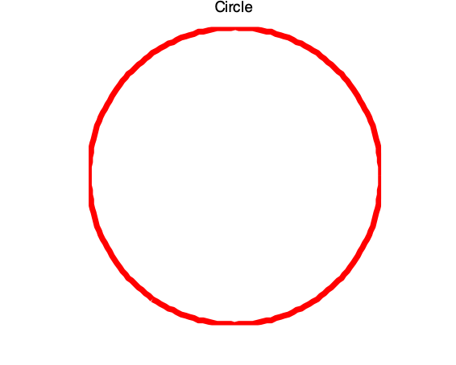
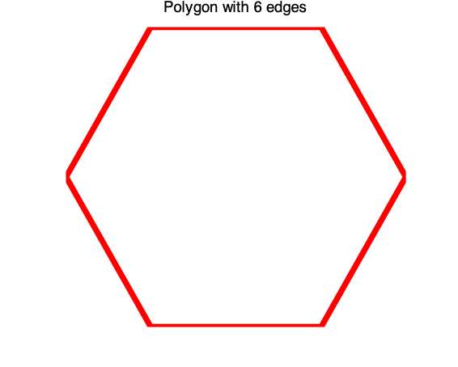

2. M文件¶
1 请分别写出用for 和while 循环语句计算$K=\sum_{i=0}^{10000000}0.2^i=1+0.2+0.2^2+\dots + 0.2^{10000000}$的程序。此外，还请写出避免循环的数值、符号计算程序。（提示：sum和“指数采用数组”配合； tic, toc可用以记录计算所花的时间。）
2 在指定阈值$\tau$ 的情况下，求$S=\sum_{n=1}^NR_n$。其中通项$R_n=\frac{1}{\sum_{k=1}^nk}$，而$N$是使通项$R_n<\tau$满足的最小正整数$n$，即$N=\arg\min_{\forall n\in \mathbb{Z}^+}{R_n\leq \epsilon}$。本题要求：先请编写一个M函数文件，且该函数的输入量为阈值$\tau$，输出量是满足要求$R_n<\tau$的最小正整数$N$及这$N$个通项和$S$。然后，在$\tau=1e-5$时，利用你所编写的M函数算出相应的$N$值、$S$值。（利用提示： 构成while环。）
3 编写一个函数M文件，它的功能：没有输入量时，画出单位圆（见图p6-1）；输入量是大于2的自然数N时，绘制正N边形，图名应反映显示多边形的真实边数（见图p6-2）；输入量是“非自然数”时，给出“出错提示”。此外，函数M文件应有H1行、帮助说明和程序编写人姓名。（提示：nargin, error, int2str）


4 使用泛函指令fminbnd寻找$y(x)=-e^{-x}|\sin[\cos x]|$在$x=0$附近的极小值，并绘制出该函数在$[-2, 2]$间的图形加以验证。本题要求：fminbnd的第一个输入量使用匿名函数表达。（提示：注意搜索范围的选择；假如极值在边界附近，进一步扩大搜索范围是合理的选择。）